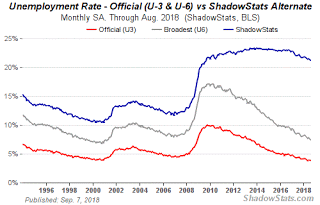
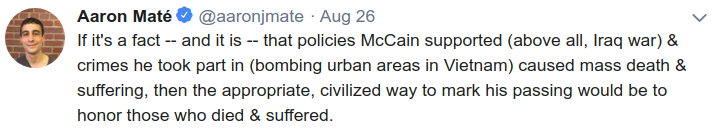
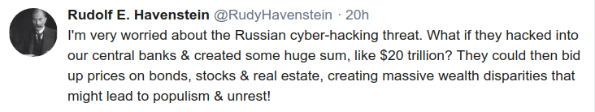
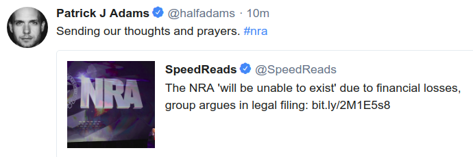

Week 36
Question
How did Trump do on unemployment?
Little better than previous admin

Graph is from Shadowstats. There is some decrease in the real unemployment. This # increased and remained steady during and until the end of previous admin. So some improvement.
But gov did nothing on the deficit and actually made it worse. Bubbles abound.
Question
Can Trump win the 2020 election?
Likely
Based on the statistical model here, and using a potential 3% GDP growth, -15% current Trump net approval rating (from Gallup), and the fact that he will be the leading the incumbent party in its first term in power, the confidence interval for Rep win is (49.84. 53.543). This is a high probability for a second term. The main factor here is incumbency, it is extremely hard for voters to switch leaders that fast. I tried growth figure of 1%, u still get (49.19 51.87), some chance for Dems but still Rep is favored. Unless there is an econ crisis, or Trump's popularity plunges further, 2nd term is likely. With less growth, and oppo pulls a Dubya... maybe there is a chance for Dems.
Benedict Evans
Its always weird when Americans on the right dismiss 'socialized' healthcare as a terrible idea without also condemning the 'socialized' police
Nice
Question
How do we explain the rise of the right in European countries with strong social state?
With that sentence
Maybe ppl were afraid to lose services of that social state bcz of the influx of refugees. I am not saying right or wrong, just saying that might have been the impression.
Comment
There are only three optimizations: Do less. Do it less often. Do it faster.
The largest gains come from 1, but we spend all our time on 3.
Right
Question
Did quantitative easing programme, executed by many central banks in the world after 2008 crisis, work?
No
See paper, based on Bank of England (UK central bank) data.
https://www.ifk-cfs.de/fileadmin/downloads/publications/wp/2011/11_29.pdf
US QE involved FED buying government securities and mortgage bonds. So FED printed money and bought securities (but this move is seen as "unorthodox", not part of normal operation, and everyone is freaked out about it one way or another, want it to end). On one hand, government debt is "monetized", on the other, mortgage bond purchases in a way became a continuous bailing out of financial institutions. US debt burden grew higher.
In cases / countries where QE is used to buy up corporate debt, it is used on large institutional debt, a move that would help cement large companies' position in the marketplace. Inequality.
QE, purchasing long-term bonds, depressed their rates, pushing investors to the stock market, creating a bubble there (see today), as well as in bonds. More inequality. The situation in bonds is even more severe (in terms of bubble) where investors front-loading FED moves made a killing by simple mirroring their actions.
John McCain
[Paraphrasing] politics is about compromise, we need to start compromising, unite Democrats and Republicans.
Wrong
We need to seperate Democrats and Republicans.
Most useful policies are self-contained, atomic, whole-or-nothing positions. Take 15-dollar-minimum-wage for example.. You either do it as-is, or don't do it at all. If you smush it, bend it in this way or that way "well... if an employee, is btw 30-40, is married, working in blah, then before noon it is 12 dollars, but if female, working in software, on Mondays it is $15".. Then the policy becomes useless, it becomes like.. Obamacare (a certifiable over-engineered piece of shit).
I was watching this video on the Oslo accords the other day, about "the Clinton solution" for the Israeli-Palestine problem. It goes like this: "Split the West Bank in three sections. Area A (some patchy shit area) gave Palestenians X amt of control, Area B (another patchy shit area inside the previous patchy shit area) Pals govern, Israel security handles security, Area C (everything else that remains), Israel controls everything.".
https://youtu.be/E0uLbeQlwjw?t=297
I looked at this map, and the patchy "solution" it represented, and I thought to myself this is how a fucking centrist thinks... Always these roundabouts, curvy moves - in a small landscape.
The main problem is a centrist often makes a bigger decision first, and makes it wrong. Democrat centrists for example (the worst kind), decide first to be Republican-lite, and as such, constrain themselves to one particular area, then they think they can accomplish things with "on the one hand.. on the other hand.." quick body moves, tactical maneuvers, delivering non-solutions but "selling it" with lip-biting, Holywood delivery, the West Wing'uesque Aaron Sorkin politico-techno-babble.
But they constrained themselves to a small area, and the strategic implication of that choice asserts itself one way or another, and collapses, on their head, burying them under it.
Question
Do you support 15$ minimum wage?
No
I'd rather give ppl free money, instead of restricting businesses with minimum wage.
Question
Without compromise how can political horse-trading work?
It can
You don't compromise on the atomic issue, but you can still horse-trade on the palette. I give you 15MW, you give me M4A. There is a palette of issues a politician wants to further, may not get them all, but can further some.
News
CBS's [CEO] Les Moonves quits amid new allegations of abuse
Great
Word is he effed it all up with Star Trek Disco. Maybe CBS will have better scifi in the future.
https://youtu.be/jLl17YXrAZY?t=207
Can we have Stargate Atlantis back? Or some kind of Stargate.. that doesn't look like a Lost remake?
#voterShaming

#russia #russia #russia

#nra
